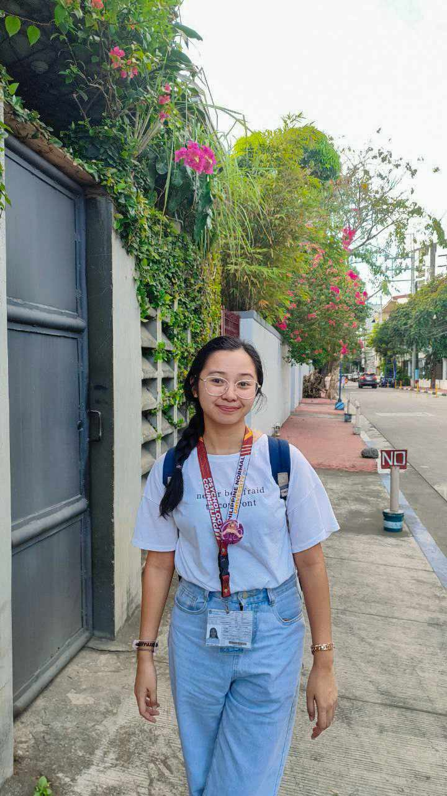

I am Mary Ann E. Aballa, a graduate-level psychology professional with a strong foundation in qualitative
and quantitative research, statistical analysis, data interpretation, and evidence-based reporting.
Finding patterns, explaining meaning, and making findings useful.
My work begins with understanding people: their contexts, emotions, questions, and systems.
I use research to clarify meaning, advocacy to define purpose, and creative media to make ideas more accessible, memorable, and useful.
My psychology background trained me to ask careful questions, understand context, and interpret data
responsibly. I also strengthened my skills in documentation, communication, facilitation,
and administrative coordination across educational and community-based settings.

researcher, data interpreter, administrative assistant
Experience
Research, education, and applied psychology experience that strengthened data interpretation, documentation, facilitation, and evidence-based decision-making.
UGAT Foundation
Ateneo, Quezon City Jan 2026 - Apr 2026
Psychologist-in-Training
Conducted 10+ supervised counseling sessions, developing case conceptualizations and presenting cases for supervision.
Delivered 20+ crisis intervention and emotional support sessions through Sandaline chat and voice channels.
Facilitated five PANATAG Project psychosocial workshops for children of OFW parents.
National University - Fairview
Fairview, Quezon City Sep 2025 - Nov 2025
Counselor-in-Training
Delivered group guidance sessions and conducted intake interviews for students aged 16-22.
Supported structured psychosocial interventions and referral processes while upholding confidentiality and trainee ethics.
American Language Village
Paco, Manila Winter and Summer Camp 2025
Teaching Assistant
Assisted Taiwanese students in English-immersive camp environments.
Facilitated activities and small-group sessions that strengthened speaking and comprehension skills.
Research Institute for Teacher Quality
Taft, Manila Apr 2024
Student Assistant
Helped outline and streamline instructional modules for the MATATAG Curriculum using needs assessment and learner-focused design skills.
Analysis Focus
Research and data work shaped by psychological training, ethical interpretation, and clear communication of evidence.
01
Research Design
Qualitative and quantitative research, literature review, survey-aware thinking, and careful framing of research questions.
02
Statistical Analysis
Dataset review, descriptive analysis, statistical interpretation, and tool-supported analysis using Excel, Jamovi, and JASP.
03
Insight Reporting
Turning complex data into clear, actionable findings through academic writing, visual summaries, and evidence-based recommendations.
Research, Other Writing & Insights
Reflective, analytical, and creative writing that explores the intersections of psychology, media, technology, and advocacy, examining human experiences, social issues, and the evolving ways people connect, communicate, and create change.
International Conference on Research, Innovation, and Sustainable DevelopmentJun 2025
Best Research Paper Award, 2nd Place
Recognized for "Navigating Forgiveness Among Adult Children Towards Parental Alcohol Misuse: A Phenomenological Exploration." (Published)
Master's ThesisPhilippine Normal University- Manila Finished May 2026
Invididual Researcher
Titled "From Career Woman to Full-Time Mother: A Content Analysis of Online Narratives on the Transition to Motherhood". A qualitative content analysis exploration of how women construct,
negotiate, and share their experiences of identity transformation as they transition from professional careers to full-time motherhood through online narratives.
Undergraduate ResearchPhilippine Normal University- Manila Finished April 2024
Individual Researcher
Titled "The Moderating Role of Avoidant Coping Strategies on Depressive Symptoms Among Young Adults With a History of Adverse Childhood Experiences".
The researcher employed a quantitative approach using both pearson-product moment correlation and regression-based moderation analysis.
Integrated graduate-level preparation in psychological statistics, quantitative and qualitative research methods, assessment, counseling, and abnormal psychology.
Philippine Normal University - Manila
Taft Avenue, Manila Expected Aug 2026
Integrated BS-MA Program in Psychology and Counseling
Major in Psychology and Counseling. Relevant coursework includes advanced psychological statistics,
quantitative and qualitative research methods, advanced counseling and psychotherapy, advanced psychological
assessment, and advanced abnormal psychology.
clear findings, useful decisions
Open to research, advocacy, workshops, creative media, design, and technology-enabled communication.
Metro Manila, Philippines | +63 936 921 8130 | aballa.maryann.e@gmail.com